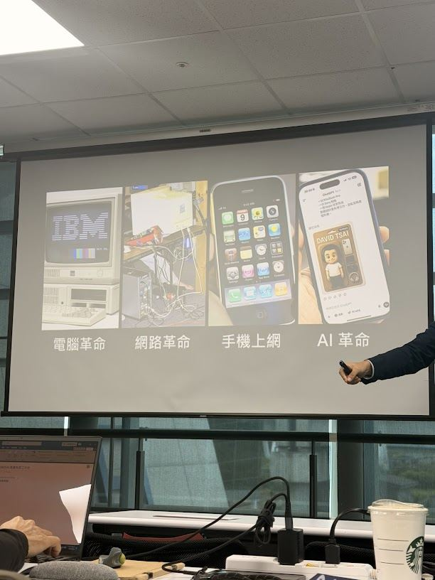
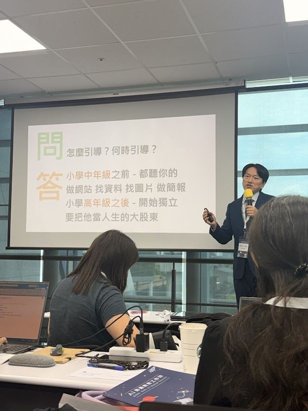
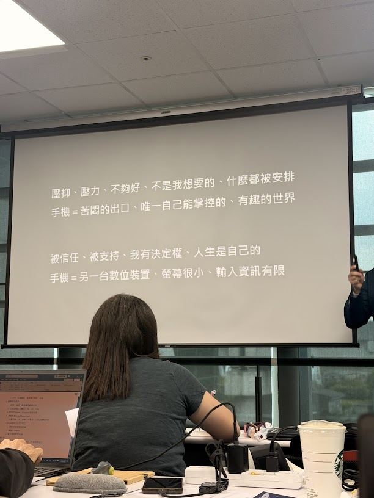
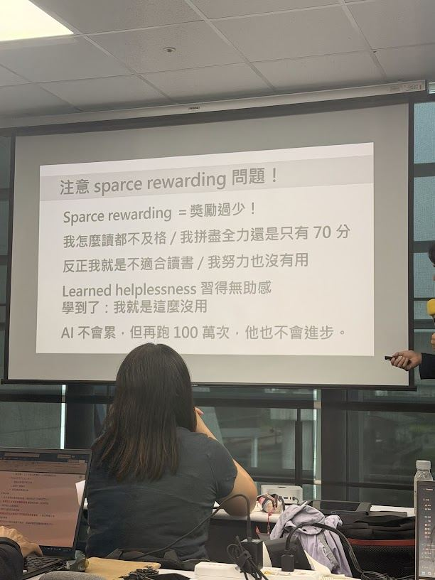
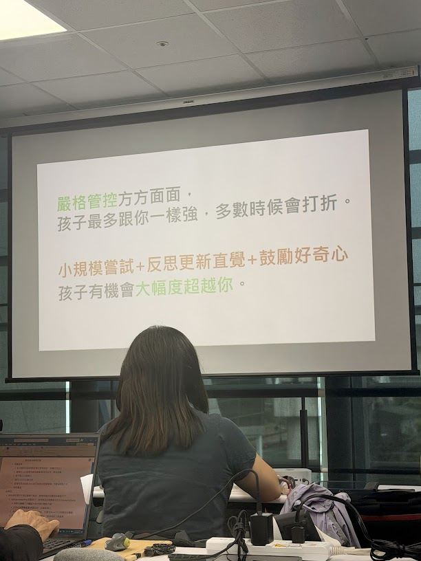
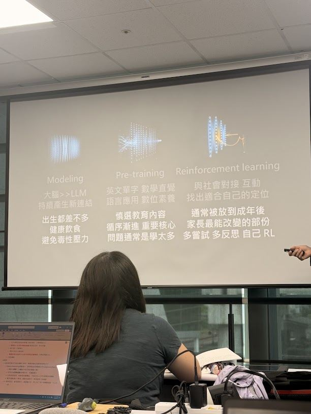
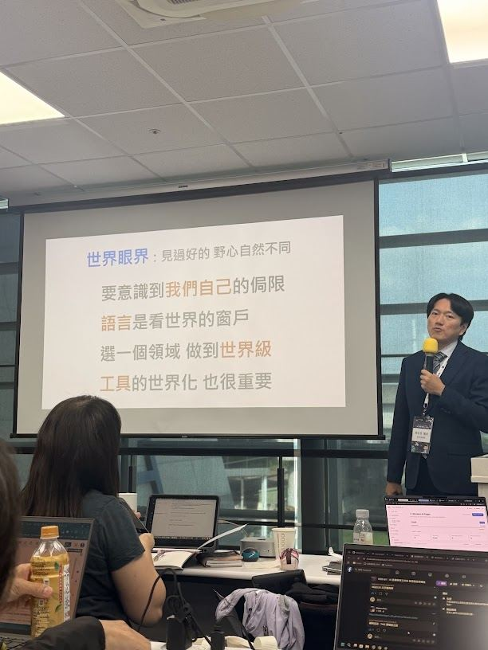
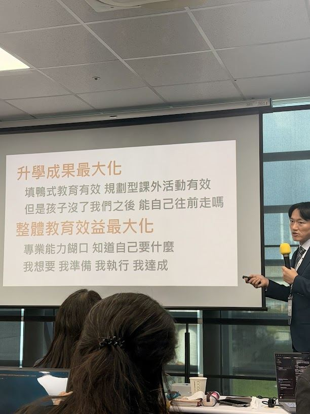
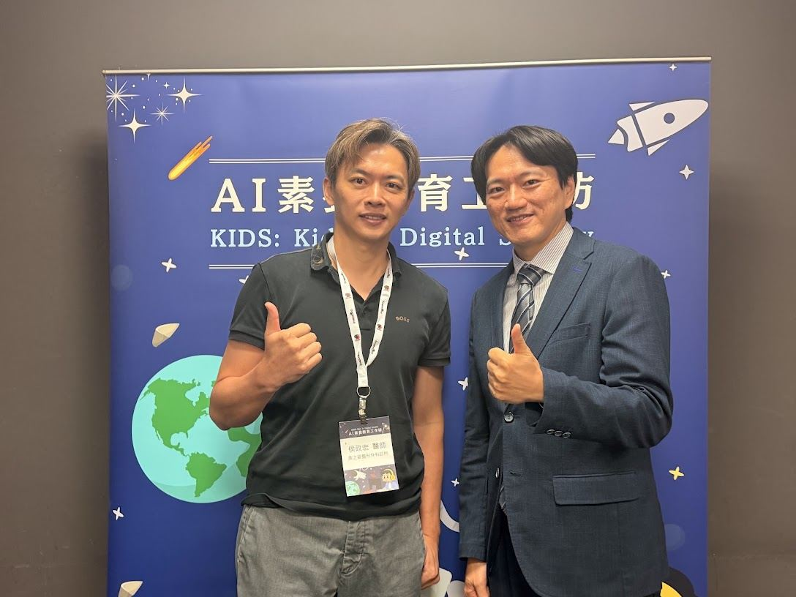

先給筆電，不是手機
筆電的重要性被低估了。完整的輸入介面、廣大的輸出畫面、競爭激烈所以價格低，而且直接銜接工作能力。手機螢幕小、輸入資訊有限，是消費裝置不是生產裝置。
課堂筆記 · 2026.08.01
KIDS: Kids Digital Society
講者：蔡依橙 醫師
整理：侯政宏
「同樣一支手機，差距從這裡開始。」
筆電的重要性被低估了。完整的輸入介面、廣大的輸出畫面、競爭激烈所以價格低，而且直接銜接工作能力。手機螢幕小、輸入資訊有限，是消費裝置不是生產裝置。
嚴格管控方方面面，孩子最多跟你一樣強，多數時候還會打折。小規模嘗試 + 反思更新直覺 + 鼓勵好奇心，孩子才有機會大幅度超越你。
升學成果最大化，還是整體教育效益最大化？孩子沒了我們之後，能自己往前走嗎？把他當成人生的大股東，從高年級開始交還決定權。
Chapter 01
蔡校長開場先丟出一個問題：3C 產品到底好不好？
他用「鬧區人潮裡的刀」和「專業廚房裡的刀」作對比——刀從來不是問題，怎麼用、在哪裡用才是問題。這個提問定調了整場課程：接下來要討論的都不是「要不要用」，而是「怎麼用」。
接著從四次革命講起：電腦革命 → 網路革命 → 手機上網 → AI 革命。每一次革命，早接觸的人都拿到了不成比例的優勢。

有趣的對照是：Bill Gates 13 歲起接觸電腦，後來造出了 Windows 與微軟帝國——但他自己不讓孩子在 14 歲前用智慧型手機。Elon Musk 同樣管控孩子的螢幕時間、建議限制社交媒體。
關鍵不是「用不用數位裝置」，而是用哪一種。他們限制的是手機和社群，不是電腦。
| 面向 | 筆電 | 手機 |
|---|---|---|
| 輸入 | 完整鍵盤，能寫長文與程式 | 小螢幕輸入，資訊量有限 |
| 輸出 | 大畫面，可多視窗對照 | 單一畫面，被動接收 |
| 價格 | 競爭激烈，價格低 | 旗艦機反而更貴 |
| 銜接 | 直接是工作能力 | 難以轉換為生產力 |
選擇第一台筆電的重點是？
那平板呢？

都聽你的
做網站、找資料、找圖片、做簡報。這個階段由家長主導，孩子跟著做。
開始獨立
要把他當成人生的大股東。決策權逐步交還，家長退到顧問位置。
如何開始輔導數位資源起步？

壓抑、壓力、不夠好
「不是我想要的、什麼都被安排」
手機 ＝ 苦悶的出口
唯一自己能掌控的、有趣的世界
被信任、被支持
「我有決定權、人生是自己的」
手機 ＝ 另一台數位裝置
螢幕很小、輸入資訊有限
被信任與支持的孩子，會用手機做記錄與創作。
許多家長把焦點放在管控使用時間，卻沒想過問題可能根本不在手機——而是孩子在真實生活中失去了掌控感。禁止不能改變處境，改變處境才能改變行為。
Chapter 02
這一段從 AlphaGo 講起，是整場最精彩的類比。

當成功率太低、回饋太稀疏，學習就會停止：
我怎麼讀都不及格 ／ 我拼盡全力還是只有 70 分
反正我就是不適合讀書 ／ 我努力也沒有用
這就是 learned helplessness 習得無助感——學到了「我就是這麼沒用」。
早期從零開始、不給棋譜訓練圍棋 AI 都失敗，正是因為 sparse rewarding。AlphaGO Zero 用三招破解，而這三招直接對應到教養：
只走三步就評估
對應到那些「半途而廢」的才藝班、體驗營——那不是浪費，那是取樣。
回頭修正評估函數
常問孩子：「你的感覺呢？」「你喜歡嗎？」讓他自己更新對自己的判斷。
探索空間要夠大
怪招要被允許。保護好奇心，不要潑冷水。

再往後推，AlphaZero 撤除了圍棋規範與對稱性限制，變得比 AlphaGO Zero 更強、學更快，連西洋棋也會了。對應到現實：運動員訓練趨勢是通才 > 專項訓練；變動快速的時代，跨領域能力很重要。

大腦 >> LLM，持續產生新連結
英文單字、數學直覺、語言應用、數位素養
與社會對接、互動，找出適合自己的定位
給 AI／孩子方向、限制、規範
避免他們爆衝、失控、嚴重失敗。
給 AI／孩子理解原因、理由、考量
讓他自行調用工具、自行成長、自行規範。
孩子需要自己感受失敗，需要父母支持，不需要嘲諷指責。
Chapter 03

外語學習重「環境」（身邊隨時有）與「動機」（他自己想要）。具體做法出乎意料地簡單：
只要使用外文吸收，就無時間上限
中文的話就 30 分鐘唷
Netflix / YouTube / Steam 都算。同時建立品味的高低差：
| 鼓勵 | 相對不鼓勵 |
|---|---|
| 全螢幕多資訊戰略遊戲 | 手機遊戲 |
| 英語知識頻道、深度介紹 | 短影音 |
如果沒有機器人可學呢？

填鴨式教育有效，規劃型課外活動有效。
但是孩子沒了我們之後，
能自己往前走嗎？
專業能力餬口，知道自己要什麼。
我想要 → 我準備
→ 我執行 → 我達成
課堂上校長也毫無保留地分享了自己孩子申請美國大學的完整讀書計畫表、Purdue 新生指南，以及他自製的 SAT 練習系統。
多鼓勵，但期待不要太高
讓孩子比你更想成功
費用不是絕對門檻——日本 13 萬起、歐洲 1–3 萬起都可以考慮。而最終要不要去，講者也是讓孩子自己決定的：他的孩子在了解各國狀況後，各自給出了留在台灣讀大學的理由。
「見過好的」不等於「一定要去」。眼界的價值在於做選擇時知道自己在選什麼。
課堂用了大量「問 / 答」投影片回應家長的實際疑慮，這裡整理成可查詢的形式。
先想清楚你要的是「升學成果最大化」還是「整體教育效益最大化」。前者有效，但孩子沒了我們之後能自己往前走嗎？
剛好跟我的教養目標一樣。其實 18 歲本來就成年了——是我們把獨立延後了，不是提早。
記錄與創作。講者舉的例子是孩子自己做的 Robot Reveal。
小學中年級之前——都聽你的，一起做網站、找資料、找圖片、做簡報。小學高年級之後——開始獨立，要把他當人生的大股東。
14 / 15 吋距離遠、16G 跑 agent、螢幕大親子同看你也好幫處理、較重減少到處帶、一定會摔所以不要心疼，你的舊機也行。
螢幕大、可遊戲，入門不錯。抄錄資料、看地圖超讚。iPad 手寫筆記孩子會用。
密碼、指紋都要有你的。幫他註冊 Gmail、FB、IG、LINE。Gmail 全數轉寄自己。用你的 Steam、你的 AI agent。
AlphaGO 用人類棋譜開始訓練，AlphaGO Zero 從零開始、無棋譜起步。但「從零開始」以前也嘗試過並失敗——差別在於 Zero 解決了 sparse rewarding。
因為成功率太小，sparse rewarding。AlphaGO Zero 用三招解決：頻繁小規模三步嘗試、自我反省更新直覺、允許胡思亂想探索怪招。
我們還是會找一項做到世界級。西洋棋、圍棋、數學、寶可夢都可以。
讓孩子去跟顧問互動一次，加上 AI 做資訊收集與確認。如果不強求，讓孩子自己決定也行。
Reflection
回想起上次參加新思惟的活動，已經是六年前的「個人品牌工作坊」了。當時課程結束後，我特別買了一台新筆電很努力地寫了一年多的部落格，慢慢建立自己的個人品牌。後來忙於工作的關係，部落格慢慢停了（校長對不起您，或許我該找時間上一下 AI 時代的個人品牌工作坊 XD），但我用這一年多寫的文章為自己後來的個人網站增添了不少內容，也很感謝當初新思惟團隊的教導以及這麼努力寫部落格的自己。
這次會再回到新思惟，是因為我長期有在追蹤蔡校長的粉專。這幾個月，我發現校長的發文風格跟以往有很大的不同，點進文章細看才驚覺——原來這些變化都是 AI 進步所帶來的成果。尤其看到那些做得漂漂亮亮又內容豐富的網站，實在讓人心動，很想知道是怎麼做出來的，於是就報名了這次的課程。
這次的「AI 素養教育工作坊」一樣維持了新思惟一貫的優良風格：短短兩三個小時，就協助學員建立起自己的 AI Agent，並順利完成了網頁製作。就連便當都跟以往一樣準備得精緻豐富，打開便當時真的有會心一笑的感覺 XD，讓我們在實作的過程中可以一邊享受美食一邊操作，還可以把所有蠢問題一次問到飽。這果然是我熟悉的新思惟呀 XD！
七個多小時的課程裡，除了建立自己的 AI Agent，蔡校長也分享了很多這幾年如何運用 3C 產品教導孩子的經驗，以及孩子們這些年的成長歷程。其中有幾段讓我印象特別深刻。
一開始校長說明筆電的重要性被低估了，筆電是拿來做事的工具，而且現在因為競爭激烈的關係，筆電的價格通常都比平板電腦低，以前我沒有好好思考筆電該什麼時候給小孩使用，我想現在已經有答案了。另一段是他用 AlphaGo 的訓練過程來談教養：如果什麼都幫孩子安排好、不讓他犯錯，孩子頂多長成跟我們一樣強；如果願意讓他們小規模嘗試、允許他們半途而廢地去體驗，他們才有機會超越我們。還有一句「18 歲本來就成年了」，讓我開始認真回推，該把哪些決定權提早交還給孩子。上完課之後，我對自己的教養方式，確實有了更多的「新思惟」。
回到家，我做的第一件事，就是再買一台新筆電 XD，這可能是每次上完新思惟的副作用 XD，但這次不是我自己用，而是給小孩用。
我想，AI 素養教育工作坊的課程結束不是一個終點。在這個不斷變化的世界當中，如何運用最新的科技與技術解決生活裡的問題並且實踐在孩子的教養，才正要開始。
很謝謝新思惟、蔡校長以及所有同仁的協助與教導，也謝謝當初毫不猶豫就報名的自己。另外也很推薦給還在 AI 教養中感到迷惘的家長們——這堂課，絕對是你和孩子一起學習 AI 的最佳途徑。
勾選狀態會存在這台電腦的瀏覽器裡。
